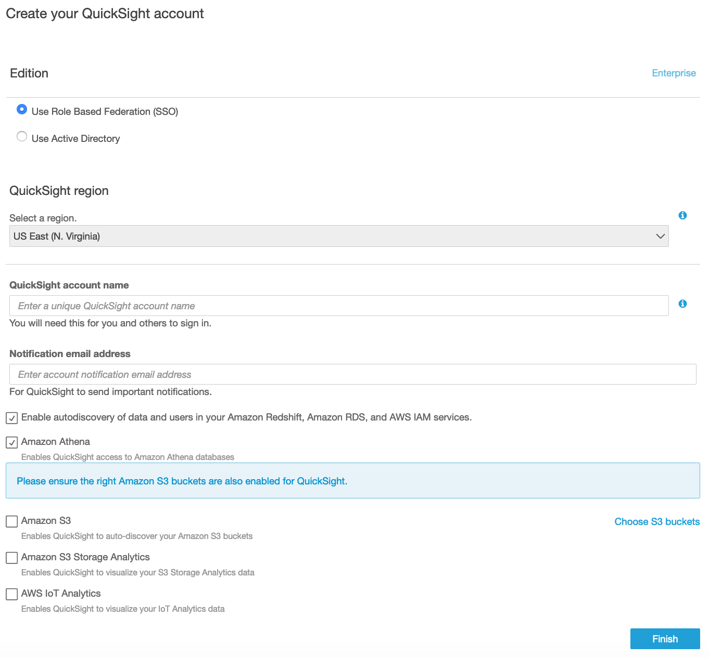
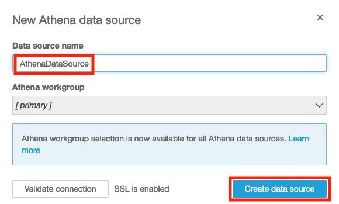
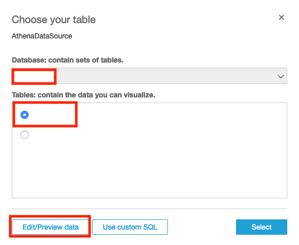
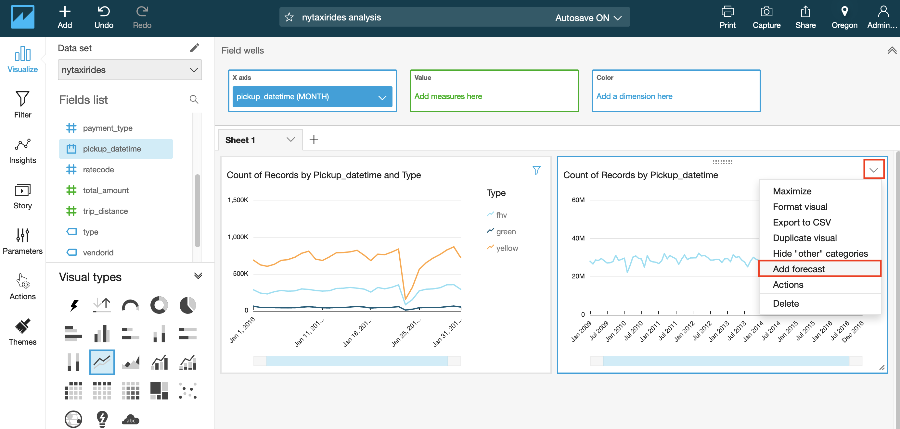
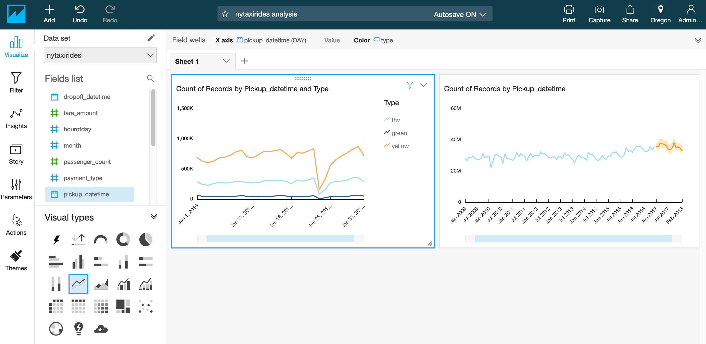
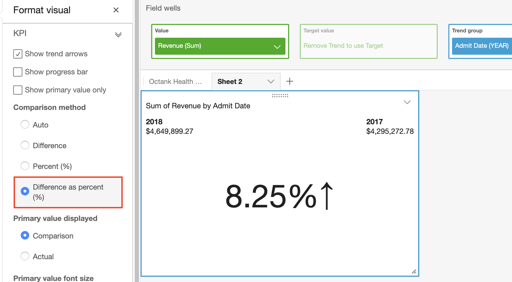

Lab 2: Visualization using Amazon QuickSight¶
- Create an Amazon S3 bucket
- Creating Amazon Athena Database and Table
- Signing up for Amazon Quicksight Standard Edition
- Configuring Amazon QuickSight to use Amazon Athena as data source
- Visualizing the data using Amazon QuickSight
Architectural Diagram¶

Create an Amazon S3 bucket¶
Note: If you have already have an S3 bucket in your AWS Account you can skip this section.
- Open the AWS Management console for Amazon S3
- On the S3 Dashboard, Click on Create Bucket.

-
In the Create Bucket pop-up page, input a unique Bucket name. It is advised to choose a large bucket name, with many random characters and numbers (no spaces).
- Select the region as Oregon.
- Click Next to navigate to next tab.
- In the Set properties tab, leave all options as default.
- In the Set permissions tag, leave all options as default.
- In the Review tab, click on Create Bucket

Creating Amazon Athena Database and Table¶
Note: If you have complete the Lab 1: Serverless Analysis of data in Amazon S3 using Amazon Athena you can skip this section and go to the next section Signing up for Amazon Quicksight Standard Edition
Amazon Athena uses Apache Hive to define tables and create databases. Databases are a logical grouping of tables. When you create a database and table in Athena, you are simply describing the schema and location of the table data in Amazon S3. In case of Hive, databases and tables don’t store the data along with the schema definition unlike traditional relational database systems. The data is read from Amazon S3 only when you query the table. The other benefit of using Hive is that the metastore found in Hive can be used in many other big data applications such as Spark, Hadoop, and Presto. With Athena catalog, you can now have Hive-compatible metastore in the cloud without the need for provisioning a Hadoop cluster or RDS instance. For guidance on databases and tables creation refer Apache Hive documentation. The following steps provides guidance specifically for Amazon Athena.
Setting up Athena (first time users)¶
If you’re a first time Athena user, you might need to configure an S3 bucket, where Athena will store the query results.

You can use an already existing bucket with a dedicated folder or you can create a new, dedicated bucket.
NOTE: Make sure you have forward slash at the end of the S3 path
Create Database¶
- Open the AWS Management Console for Athena.
- If this is your first time visiting the AWS Management Console for Athena, you will get a Getting Started page. Choose Get Started to open the Query Editor. If this isn’t your first time, the Athena Query Editor opens.
- Make a note of the AWS region name, for example, for this lab you will need to choose the US West (Oregon) region.
- In the Athena Query Editor, you will see a query pane with an example query. Now you can start entering your query in the query pane.
- To create a database named mydatabase, copy the following statement, and then choose Run Query:
CREATE DATABASE mydatabase
- Ensure mydatabase appears in the DATABASE list on the Catalog dashboard

Create a Table¶
-
Ensure that current AWS region is US West (Oregon) region
-
Ensure mydatabase is selected from the DATABASE list and then choose New Query.
-
In the query pane, copy the following statement to create a the NYTaxiRides table, and then choose Run Query:
CREATE EXTERNAL TABLE NYTaxiRides (
vendorid STRING,
pickup_datetime TIMESTAMP,
dropoff_datetime TIMESTAMP,
ratecode INT,
passenger_count INT,
trip_distance DOUBLE,
fare_amount DOUBLE,
total_amount DOUBLE,
payment_type INT
)
PARTITIONED BY (YEAR INT, MONTH INT, TYPE string)
STORED AS PARQUET
LOCATION 's3://us-west-2.serverless-analytics/canonical/NY-Pub'
4.Ensure the table you just created appears on the Catalog dashboard for the selected database.
Now that you have created the table you need to add the partition metadata to the Amazon Athena Catalog.
- Choose New Query, copy the following statement into the query pane, and then choose Run Query to add partition metadata.
MSCK REPAIR TABLE NYTaxiRides
The returned result will contain information for the partitions that are added to NYTaxiRides for each taxi type (yellow, green, fhv) for every month for the year from 2009 to 2016
Signing up for Amazon QuickSight Enterprise Edition¶
- Open the AWS Management Console for QuickSight.

- If this is the first time you are accessing QuickSight, you will see a sign-up landing page for QuickSight.
- Click on Sign up for QuickSight.
Note: Chrome browser might timeout at this step. If that’s the case, try this step in Firefox/Microsoft Edge/Safari.
- On the next page, for the subscription type select the “Enterprise Edition” and click Continue.

- On the next page,
i. Enter a unique QuickSight account name.
ii. Enter a valid email for Notification email address.
iii. Just for this step, leave the QuickSight capacity region as N.Virginia.
iv. Ensure that Enable autodiscovery of your data and users in your Amazon Redshift, Amazon RDS and AWS IAM Services and Amazon Athena boxes are checked.
v. Click Finish.

vi. You will be presented with a message Congratulations! You are signed up for Amazon QuickSight! on successful sign up. Click on Go to Amazon QuickSight.
- Before continuing with the following steps, make sure you are in the N. Virginia Region to edit permissions.
Now, on the Amazon QuickSight dashboard, navigate to User Settings page on the Top-Right section and click Manage QuickSight.

- In this section, click on Security & permissions and then click Add or remove.

- Click on Amazon S3 and on the tab that says S3 buckets linked to QuickSight account.
- Ensure Select All is checked.
- Click on Select buckets.

- When you are done doing all this, click Update to bring you back to the user settings back.
Configuring Amazon QuickSight to use Amazon Athena as data source¶
For this lab, you will need to choose the region where your data resides.

-
Click on the region icon on the top-right corner of the page, and select the region where your data resides.
-
Click on Manage data on the top-right corner of the webpage to review existing data sets.

-
Click on New data set on the top-left corner of the webpage and review the options.
-
Select Athena as a Data source.

- Enter the Data source name (e.g. AthenaDataSource).

- Click Create data source.
- Select your created Athena database.

-
Choose the table you need to visualize its data.
-
Choose Save and Visualize on top of the page.
Visualizing the data using Amazon QuickSight¶
Before you start building dashboard graphs with QuickSight, pick two - three columns from your data set that meet the following criteria: 1. The first column is a date column (can be year, month or day. Usually marked by calendar icon in Fields list on the left) 2. The second column is a quantifiable number (revenue, count, distance, etc. Usually marked by a green hash #) 3. The third column has categorical value, which means it has specific limited set of values (type, category, etc. Usually marked by ticket icon)
Now that you have configured the data source and picked your columns to work with, we will start by forecasting values in future dates based on your sample data.
Forecast Monthly Trend for your Quantity Column¶
- Under the Fields list, Select your Date column for x-axis by clicking on the field name.
- Change the visual type to a line chart by selecting the line chart icon highlighted in the screenshot below under Visual types.
At this point, the Y-axis of the visual will be populated automatically with count of records that match each date individually. You can keep it that way and do forecasting for count of records, or choose another quantity attribute from Fields list to populate Y-axis automatically and have more meaningful forecast.
Before viewing the forecast, you can choose the level of aggregation you want for your date column to populate X-axis by year, month or day. 4. Click on the date field name in top Field Wells bar to reveal a sub-menu. 5. Select Aggregate:Month to aggregate by month.
You can also use the slider on the X-axis to select the range of values to appear in the graph.

- Click arrow in top right corner of the visual and select Add forecast.


NOTE: Make sure your Y-axis is assigned to a quantity column before proceeding.
Visualize Month over Month Quantity¶
- Add a new visual by duplicating the previous visual. Click on visual top right arrow and select Duplicate visual.
- Select KPI as the Visual Type (bottom left of the screen).
- In the field wells, click arrow in Date column to change the aggregation level to Month or as needed.

- Now select format visual by clicking on arrow on top right corner of the KPI graph.
- Select Different as percent(%) under comparison method on the left.

Review ML Insights¶
- Click the ‘Insights’ menu on the left. Notice all the suggested insights QuickSight has generated based on what has been built so far!
- Hover over any of the insights and click the ‘+’ to add it to the dashboard.

NOTE: You can customize the narrative by clicking on top right arrow of the visual and selecting Customize narrative.
Note: The interesting outlier in the above graph is that on Jan23rd, 2016, you see the dip in the number of taxis across all types. Doing a quick google search for that date, gets us this weather article from NBC New York

Using Amazon QuickSight, you were able to see patterns across a time-series data by building visualizations, performing ad-hoc analysis, and quickly generating insights.
License¶
This library is licensed under the Apache 2.0 License.